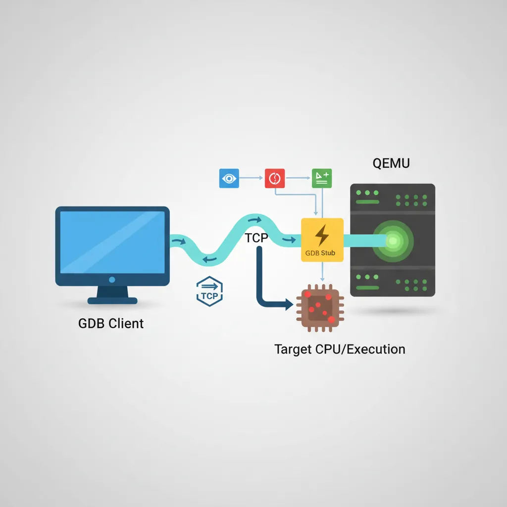
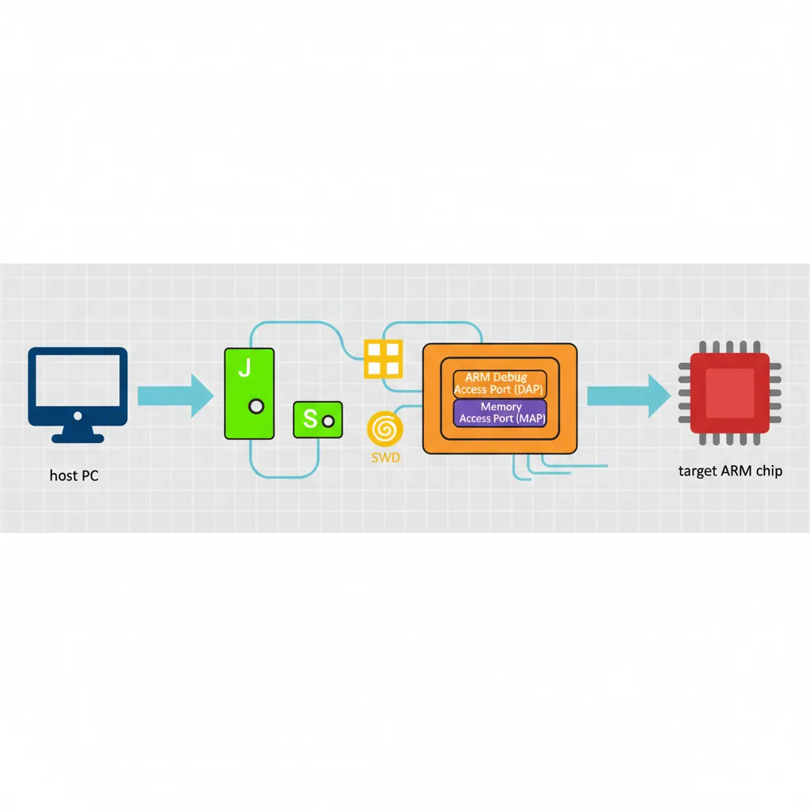
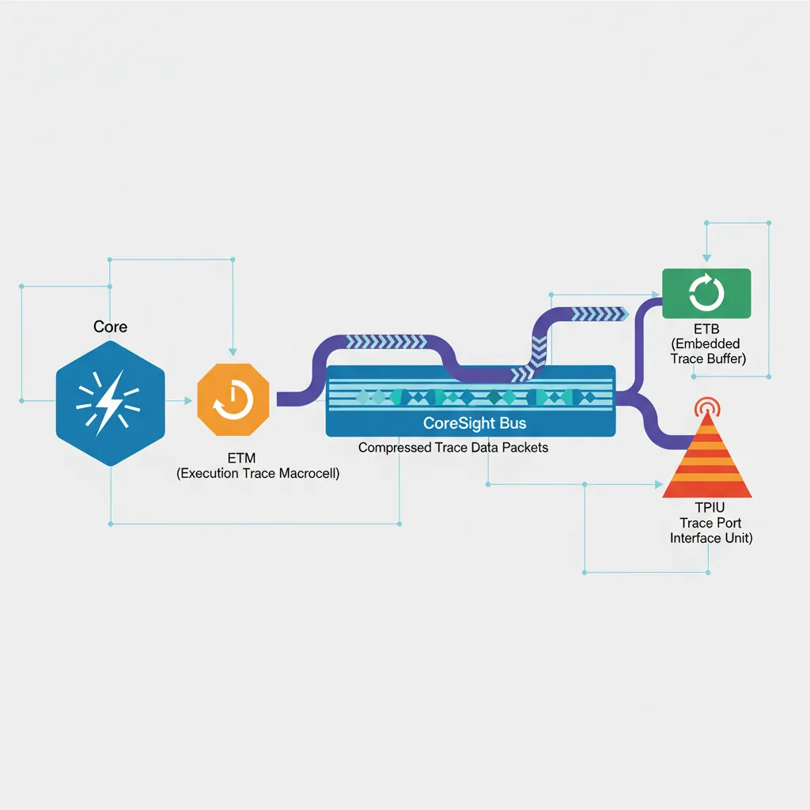
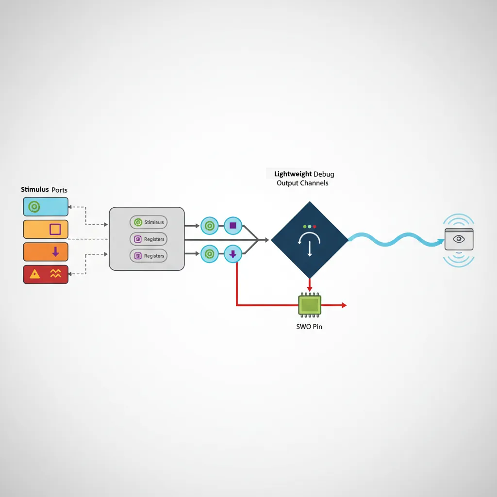
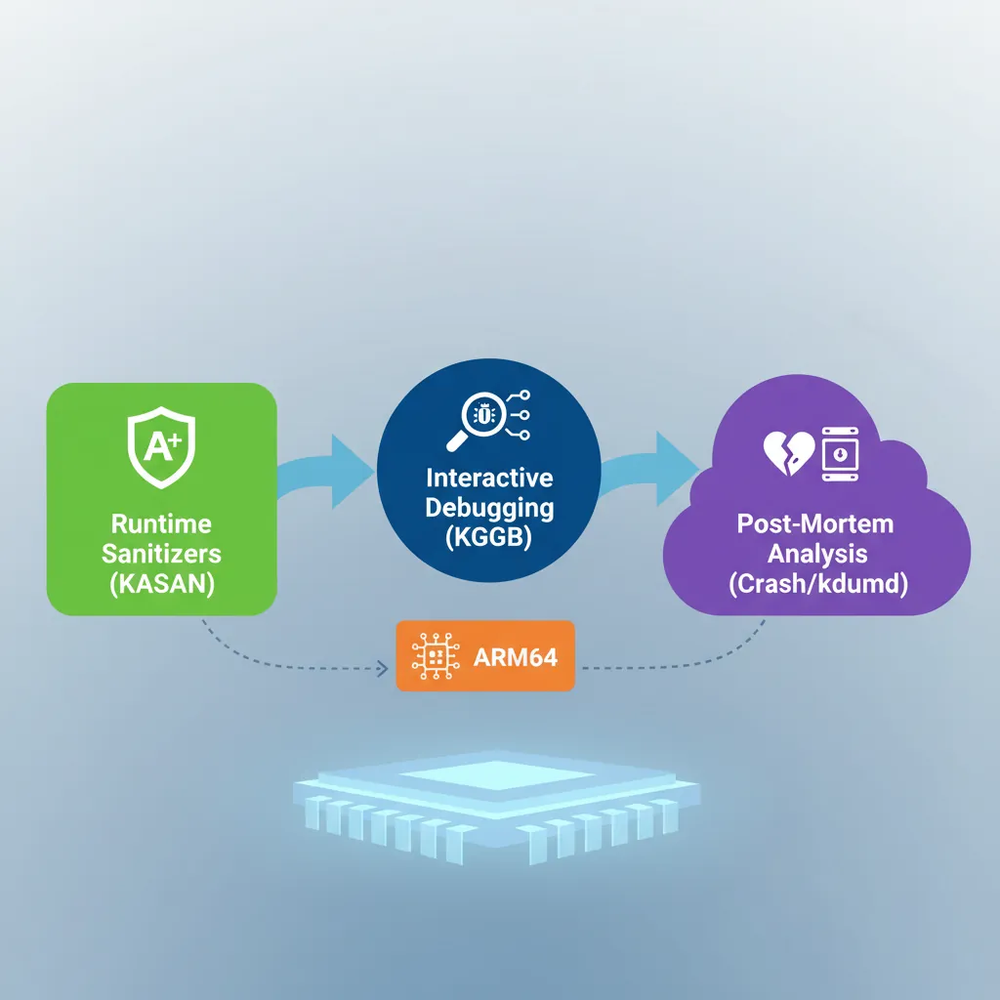

Debugging Architecture Overview
ARM Assembly Mastery
Architecture History & Core Concepts
ARMv1→v9, RISC philosophyARM32 Instruction Set Fundamentals
ARM vs Thumb, CPSRAArch64 Registers, Addressing & Data Movement
X/W regs, addressing modesArithmetic, Logic & Bit Manipulation
ADD/SUB, bitfield, CLZBranching, Loops & Conditional Execution
Branch types, jump tablesStack, Subroutines & AAPCS
Calling conventionsMemory Model, Caches & Barriers
Weak ordering, DMB/DSB/ISBNEON & Advanced SIMD
Vector ops, intrinsicsSVE & SVE2 Scalable Vectors
Predicate regs, HPC/MLFloating-Point & VFP Instructions
IEEE-754, rounding modesException Levels, Interrupts & Vectors
EL0–EL3, GICMMU, Page Tables & Virtual Memory
Stage-1 translationTrustZone & Security Extensions
Secure monitor, TF-ACortex-M Assembly & Bare-Metal
NVIC, SysTick, linker scriptsCortex-A System Programming & Boot
EL3→EL1, MMU setup, PSCIApple Silicon & macOS ABI
ARM64e PAC, Mach-O, dyldInline Assembly & C Interop
Constraints, clobbersPerformance Profiling & Micro-Opt
Pipeline hazards, PMUReverse Engineering & Binary Analysis
ELF, disassembly, CFRBuilding a Bare-Metal OS Kernel
Bootloader, UART, schedulerARM Microarchitecture Deep Dive
OOO pipelines, branch predictVirtualization Extensions
EL2 hypervisor, stage-2, KVMDebugging & Tooling Ecosystem
GDB, OpenOCD/JTAG, ETM/ITM, QEMULinkers, Loaders & Binary Format Internals
ELF deep dive, relocations, PIC, crt0Cross-Compilation & Build Systems
GCC/Clang toolchains, CMakeARM in Real Systems
Android, FreeRTOS/Zephyr, U-BootSecurity Research & Exploitation
ASLR, PAC attacks, ROP/JOPEmerging ARMv9 & Future Directions
MTE, SME, confidential computeHardware: JTAG/SWD pins → Debug Access Port (DAP) → Memory Access Port (MEM-AP) → system bus
Trace: ETM (instruction-level) → CoreSight trace bus → TPIU/ETB → host
Protocol: OpenOCD (JTAG/SWD) → GDB Remote Serial Protocol (RSP) → GDB
Virtual: QEMU -s flag → built-in GDB stub (no hardware needed)
GDB Remote Protocol
# ── Connect GDB to a QEMU GDB stub (from Part 20 bare-metal kernel) ──
qemu-system-aarch64 \
-machine virt -cpu cortex-a57 -m 128M \
-kernel kernel.elf -serial stdio -display none \
-s -S # -s: GDB on port 1234, -S: halt at boot
# In a second terminal:
aarch64-linux-gnu-gdb kernel.elf
(gdb) target remote :1234
(gdb) b _start
(gdb) continue
(gdb) info registers # Show all GP registers
(gdb) x/4i $pc # Disassemble 4 instructions at PC
(gdb) x/32xg $sp # Dump 32 quadwords from stack pointer
(gdb) p/x *(uint64_t*)0x40000000 # Read physical memory
(gdb) set $x0 = 0x1234 # Modify register
(gdb) watch *(uint64_t*)0x40100000 # Hardware watchpoint on memory address
# ── GDB useful AArch64-specific commands ──
# Inspect system registers (aarch64 extension):
(gdb) monitor info registers # QEMU: show all QEMU-visible regs
# Set conditional breakpoint (break when X0 == 5):
(gdb) b some_function if $x0 == 5
# Tui mode for source+asm side by side:
(gdb) tui enable
(gdb) layout split
# Save/load breakpoints:
(gdb) save breakpoints bp.txt
(gdb) source bp.txtOpenOCD & JTAG/SWD
# ── Install OpenOCD and connect to a Raspberry Pi 4 via J-Link ──
# (Raspberry Pi 4 exposes JTAG on GPIO 22-27 with appropriate config)
# openocd.cfg for RPi4 via J-Link
cat > rpi4.cfg <<'EOF'
# Probe: SEGGER J-Link (SWD mode)
source [find interface/jlink.cfg]
transport select swd
# Target: ARM Cortex-A72 (AArch64)
source [find target/bcm2711.cfg]
# SWD clk: start conservative
adapter speed 1000
EOF
openocd -f rpi4.cfg &
# Then attach GDB:
aarch64-linux-gnu-gdb vmlinux
(gdb) target extended-remote :3333
(gdb) monitor reset halt
(gdb) b start_kernel
(gdb) continue
# ── OpenOCD flash programming (Cortex-M embedded, Part 14 context) ──
# Example: flash bare-metal firmware to STM32 via ST-Link
openocd \
-f interface/stlink.cfg \
-f target/stm32f4x.cfg \
-c "program firmware.elf verify reset exit"
# Memory read/write from OpenOCD telnet interface:
telnet localhost 4444
> halt
> mdw 0x40000000 8 # Read 8 words from 0x40000000
> mww 0x40000000 0xDEADBEEF # Write wordETM Instruction Trace

// Enable ETMv4 via system registers (AArch64, EL2 access required)
// CoreSight registers are memory-mapped in the debug ROM region
// Cortex-A78 ETM base address: read from ROM table at 0xE00FF000
// In assembly (EL2 or debug monitor):
.equ ETM_BASE, 0xE0041000 // ETM for CPU0 (SoC-specific)
.equ ETM_TRCPRGCTLR, 0x004 // Programming Control Register
.equ ETM_TRCCONFIGR, 0x010 // Configuration Register
.equ ETM_TRCVICTLR, 0x080 // ViewInst Control Register (which PCs to trace)
.equ ETM_TRCOSLAR, 0x300 // OS Lock Access Register
// Step 1: Unlock OS Lock (prevents ETM access if locked)
mov x0, #ETM_BASE
str wzr, [x0, #ETM_TRCOSLAR] // Write 0 to unlock
// Step 2: Disable ETM for programming
ldr w1, [x0, #ETM_TRCPRGCTLR]
bic w1, w1, #1 // Clear EN bit
str w1, [x0, #ETM_TRCPRGCTLR]
dsb sy
isb
// Step 3: Configure to trace all instructions, timestamps on
mov w2, #(1 << 6) // TRCONFIGR: timestamps enabled
str w2, [x0, #ETM_TRCCONFIGR]
// Step 4: ViewInst — include all EL1 instructions (no filter)
mov w3, #0x201 // TRCVICTLR: EL1NS, no filter
str w3, [x0, #ETM_TRCVICTLR]
// Step 5: Re-enable ETM
ldr w1, [x0, #ETM_TRCPRGCTLR]
orr w1, w1, #1
str w1, [x0, #ETM_TRCPRGCTLR]
isb# Decode ETM trace in Linux using Coresight subsystem
# (kernel must be built with CONFIG_CORESIGHT=y, CONFIG_CORESIGHT_ETM4X=y)
# Enable ETM tracing on CPU0:
echo 1 > /sys/bus/coresight/devices/etm0/enable_source
# Run workload:
./my_workload &
PID=$!
sleep 1
kill -STOP $PID
echo 0 > /sys/bus/coresight/devices/etm0/enable_source
# Read ETB (Embedded Trace Buffer) and decode:
cat /dev/cs_etb0 > trace.raw
# Use 'perf' with cs-etm event:
perf record -e cs_etm//@etm0/ --per-thread ./my_workload
perf report --stdio --call-graph flatITM Stimulus Ports
// ITM (Instrumentation Trace Macrocell) — Cortex-M / A debug printf
// ITM_STIM0 at 0xE0000000 — write a byte/word and it appears in trace
// No clock cycles wasted on flush — non-blocking when demultiplexed via SWO pin
.equ ITM_STIM0, 0xE0000000 // Stimulus port 0
.equ ITM_TER, 0xE0000E00 // Trace Enable Register (enable port 0)
.equ ITM_TCR, 0xE0000E80 // Trace Control Register
.equ ITM_LAR, 0xE0000FB0 // Lock Access Register
// itm_init: unlock and enable ITM, stimulus port 0
itm_init:
mov x0, #ITM_LAR
movk x0, #0xE000, lsl #16
mov w1, #0xC5ACCE55 // ITM unlock key
str w1, [x0] // Unlock ITM
mov x2, #ITM_TCR
movk x2, #0xE000, lsl #16
mov w3, #0x00010005 // ITMENA=1, TraceBusID=1
str w3, [x2]
mov x4, #ITM_TER
movk x4, #0xE000, lsl #16
mov w5, #1 // Enable port 0 only
str w5, [x4]
ret
// itm_putc(char c) — x0 = character, non-blocking write to stimulus port 0
itm_putc:
mov x1, #ITM_STIM0
movk x1, #0xE000, lsl #16
.itm_spin:
ldr w2, [x1] // FIFOREADY bit in STIM read
tst w2, #1
b.eq .itm_spin // Wait until FIFO has space
strb w0, [x1] // Write 1 byte to port 0
ret
QEMU as Debug Target
# ── Debug AArch64 Linux kernel with QEMU + GDB ──
# Run QEMU with GDB stub enabled and halted at boot:
qemu-system-aarch64 \
-machine virt -cpu cortex-a72 -m 2G \
-kernel Image \
-initrd initramfs.cpio.gz \
-append "nokaslr console=ttyAMA0 debug" \
-serial stdio -display none \
-s -S
# Note: nokaslr disables KASLR (kernel address randomisation) — required for GDB symbols to work
# Attach GDB with kernel vmlinux symbols:
aarch64-linux-gnu-gdb vmlinux
(gdb) target remote :1234
(gdb) add-symbol-file drivers/net/virtio_net.ko 0xffff000001234000 # Load module symbols
(gdb) b net_rx_action # Kernel breakpoint
(gdb) continue
# Trace individual syscalls using GDB catch:
(gdb) catch syscall read # Break on every read() syscall
(gdb) commands # Run commands on each catch
silent
printf "read at pc=%#lx\n", $pc
continue
end# ── QEMU register inspection while halted ──
# In GDB: QEMU maps ARM64 system registers via monitor interface
(gdb) monitor info registers # All registers including PSTATE, ELR, SPSR
# In QEMU monitor (Ctrl+A C to switch from serial to monitor):
(qemu) x /10i 0xffff800010000000 # Disassemble kernel .text
(qemu) xp /4x 0x40000000 # Physical memory dump
(qemu) info mtree # Show full ARM memory map
(qemu) info cpus # All vCPUs and their statesKernel Debugging Workflows
# ── 1. KASAN (Kernel Address Sanitizer) for ARM64 memory bugs ──
# Build kernel with:
# CONFIG_KASAN=y, CONFIG_KASAN_GENERIC=y
# All heap out-of-bounds and use-after-free bugs print:
# BUG: KASAN: slab-out-of-bounds in function+offset/size
# ── 2. KGDB — built-in kernel GDB stub over serial ──
# Boot: append "kgdboc=ttyAMA0,115200 kgdbwait"
# Connect: aarch64-linux-gnu-gdb vmlinux -ex "target remote /dev/ttyUSB0"
# ── 3. Ftrace — function tracer with zero config in sysfs ──
echo function > /sys/kernel/debug/tracing/current_tracer
echo schedule > /sys/kernel/debug/tracing/set_ftrace_filter
echo 1 > /sys/kernel/debug/tracing/tracing_on
sleep 1
echo 0 > /sys/kernel/debug/tracing/tracing_on
cat /sys/kernel/debug/tracing/trace | head -50
# ── 4. Crash dump analysis with crash tool ──
# Configure kernel: CONFIG_KEXEC=y, CONFIG_CRASH_DUMP=y
# kdump via kexec: on panic, boot capture kernel:
kdump: saved vmcore to /var/crash/vmcore
crash vmlinux /var/crash/vmcore
crash> bt # Backtrace of panicking task
crash> log # Kernel log buffer at crash time
crash> ps # All tasks at crash time
Case Study: Debugging a Real-World ARM Boot Failure
When the Board Won't Boot: A Cortex-A53 Custom SoC Story
A hardware startup bringing up a custom Cortex-A53 quad-core SoC encountered a devastating production bug: 1 in 50 boards failed to boot, hanging silently after ATF (Arm Trusted Firmware) started. No UART output, no error LED. The debugging journey illustrates every tool in this article:
- Step 1 — JTAG (OpenOCD + J-Link): Connected to the DAP and halted all four cores. Three cores were parked correctly (WFE loop). Core 0 was stuck in a
DMB SYat the very end of BL2 → BL31 handoff. The program counter hadn't advanced past the barrier. - Step 2 — GDB inspection:
info registersshowed SCTLR_EL3.C=1 (caches enabled) but MAIR_EL3 contained garbage. The memory attribute for the ATF code region was configured as Device-nGnRnE instead of Normal Cacheable — meaning every instruction fetch was non-cacheable and non-speculative. The DMB was waiting for all outstanding stores to complete, but the store buffer was wedged because the cache controller was trying to coherence-check a non-cacheable region. - Step 3 — ETM trace (Lauterbach TRACE32): Instruction trace showed the MAIR_EL3 was written correctly 99% of the time. On failing boards, a voltage droop during the PLL lock sequence caused a transient SRAM bit-flip in the ATF's
.datasection where MAIR constants were stored. The ETM trace proved the write instruction executed correctly but the value it loaded from memory was already corrupted. - Fix: Added a MAIR readback verification loop after initial configuration: write MAIR, read it back, compare, retry up to 3 times. Added CRC check on ATF .data section at boot. Zero failures across 10,000 units after the fix.
Key lesson: Each debugging layer revealed what the previous couldn't. JTAG + GDB found where the CPU was stuck. ETM trace found why — a hardware transient that no amount of printf debugging could have caught.
Evolution of ARM Debug: From ICE to CoreSight
ARM debugging technology has evolved through distinct generations:
- 1990s — EmbeddedICE: ARM7TDMI included the first on-chip debug unit. Two hardware breakpoints and two watchpoints, controlled via JTAG scan chain. GDB talked to the ICE through manufacturer-specific protocols (ARM Multi-ICE, Lauterbach TRACE32).
- 2004 — CoreSight v1: ARM introduced a standardized debug interconnect — the Debug Access Port (DAP) and standard memory-mapped debug components. For the first time, different debug probes could connect to any CoreSight-compliant chip using the same protocol.
- 2008 — ETMv4: Full instruction-level tracing at GHz speeds. Each instruction compressed to ~1 bit on average (branch outcomes + exception transitions). A 32KB ETB can store millions of instructions.
- 2016 — CoreSight SoC-600: Added cross-trigger interfaces (CTI) for multi-core synchronized halt, timestamp synchronization across cores, and AMBA ATB (Advanced Trace Bus) for streaming trace to DDR at multi-GB/s rates.
- 2020+ — ARM Statistical Profiling Extension (SPE): Hardware-sampled profiling directly to memory. Every Nth instruction (configurable) is sampled with full context (PC, latency, data address, cache/TLB events) — like perf but zero software overhead.
Hands-On Exercises
GDB Command Mastery with QEMU
Using the Part 20 bare-metal kernel in QEMU with GDB:
- Set a breakpoint on
uart_putc. When it hits, print the character being sent:p/c (char)$x0 - Set a hardware watchpoint on the UART data register:
watch *(uint32_t*)0x09000000. Continue and confirm GDB breaks every time a character is written - Use
display/i $pcto automatically show the next instruction at every breakpoint hit - Use
record full(if supported by QEMU-GDB) to enable reverse debugging, thenreverse-stepito step backwards through execution
Deliverable: A GDB command script (.gdbinit) that automates connecting to QEMU, loading symbols, and setting up your standard breakpoints.
Ftrace Kernel Function Profiling
On an ARM64 Linux system (Raspberry Pi, cloud instance, or QEMU with full Linux):
- Enable function tracing:
echo function > /sys/kernel/debug/tracing/current_tracer - Filter to scheduler functions only:
echo 'schedule*' > /sys/kernel/debug/tracing/set_ftrace_filter - Run a workload (
stress-ng --cpu 4 --timeout 5), then read the trace - Switch to
function_graphtracer and repeat — observe the call tree with timing for each function - Use
trace-cmd record -p function_graph -g schedulefor a cleaner workflow
Analysis: Identify the top 5 most-called functions in the scheduler path. Correlate with what you know about context switching from Part 20.
Custom GDB Python Script for ARM64
Write a GDB Python extension that pretty-prints ARM64 system register state:
- Create
arm64_debug.pywith a GDB command class that inherits fromgdb.Command - When invoked, read key registers:
gdb.parse_and_eval("$pc"),$sp,$cpsr - Decode PSTATE fields from CPSR: N, Z, C, V flags, current EL (bits [3:2]), SP selection (bit 0), and exception masking (DAIF, bits [9:6])
- Pretty-print:
EL1h | NZCV=0b1001 | DAIF=0b1111 (all masked) | SP=0xFFFF...1000 - Bonus: Add a
arm64-btcommand that walks the frame pointer chain (X29) manually, printing each saved LR (X30) — a manual stack trace that works even when GDB's built-inbtfails
Load: (gdb) source arm64_debug.py then use (gdb) arm64-state
Conclusion & Next Steps
The ARM debugging stack is deep but consistent: every layer from JTAG hardware to kernel tracing exposes the same fundamental abstractions — halt, single-step, memory read/write, and execution trace. Mastering these tools transforms opaque crashes into navigable execution histories. The boot failure case study shows how layered debugging tools complement each other, and the exercises build practical muscle memory with GDB, Ftrace, and custom debug scripting that you'll use throughout your ARM development career.